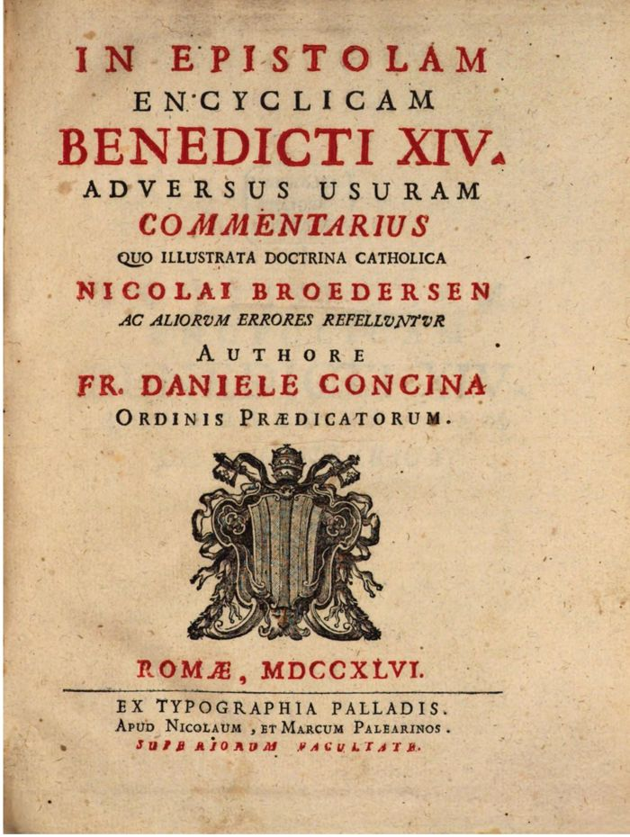
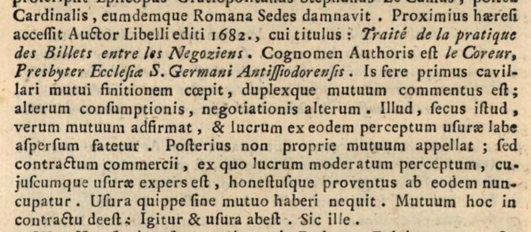
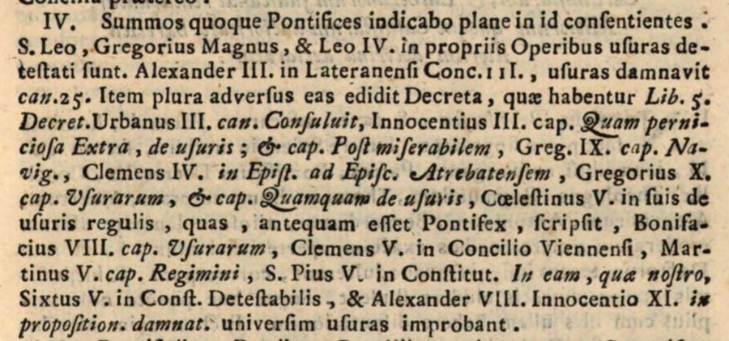
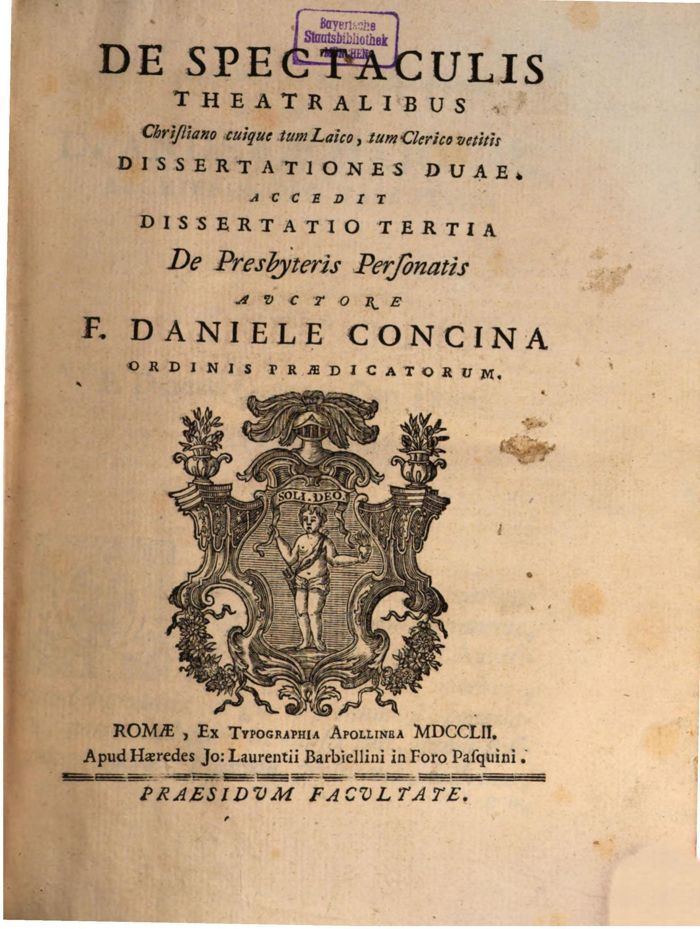
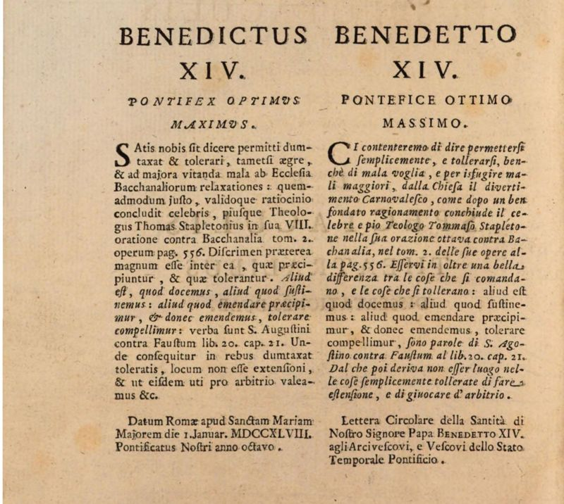
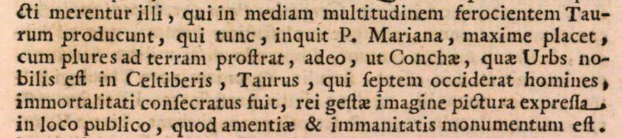
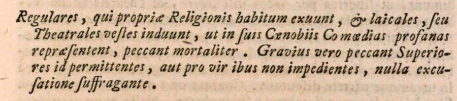

Calvin, Molinaeus and the three kinds of borrower (1746, p. 2)

Latin: Rome 1746, Dissertatio I, ch. I, § II, p. 2, scan n45. Highlighted: what Lecky reports.
II. To go back a little further, the errors that moved the Apostolic See to act are these. Calvin, who revived the heresies of the Patarenes or Cathars and other heretics of earlier times, also adopted errors at war with the divine law that forbids usury, but dressed them in a new mask. He grants that usury was absolutely forbidden to the Jews, but contends that this law was political or ceremonial, and lapsed when the Gospel was proclaimed: “From which it follows” (he says on the eighth commandment) “that usury is not unlawful today.” Calvin wrote on the subject in passing; Charles Dumoulin [Molinaeus] wrote on it expressly, in French and in Latin, and set out to fortify the new error about usury that Calvin had brought in. He denies that usury offends commutative justice, if it is exacted within the limits set by the civil laws; he grants only that it conflicts with charity, if it is excessive or taken from the poor. He distinguishes three kinds of people. First, those who live by begging and cannot repay a loan. Second, those who need money through some accident, but can repay it in due time. Third, the rich: merchants, and owners of land and rents. The first, he says, must be helped by alms, or by a loan with no hope of recovering the principal; the second must be lent to free, with only the principal to repay, without profit; and from the third he defends the just exaction of moderate interest along with the principal.
Original Latin
II. Errores porro, qui Sedem Apostolicam sollicitarunt, ut paulo altius rem arcessam, sunt sequentes. Calvinus, qui Paterenorum, seu Catharorum, aliorumque priorum temporum hæreticorum renovavit hæreses, errores quoque pugnantes cum Divina lege, quæ usuras vetat, adoptavit, sed nova indutos larva. Vetitam absolute Judæis usuram asserit, sed legem hanc politicam, seu cæremonialem esse contendit, quæ, Evangelio promulgato, evanuit; Unde sequitur (inquit in octavum Decalogi præceptum) usuras hodie non esse illicitas. Obiter hoc de argumento Calvinus, sed ex instituto Carolus Molinæus scripsit, tum Gallice, tum Latine. Novum ipse de usura invectum a Calvino errorem munire studuit. Negat usuram justitiæ commutanti adversari, si fit ad legum civilium præscriptum exacta; sed cum charitate tantum pugnare concedit, si nimia fit, vel a pauperibus percepta. Tria ille hominum genera distinguit. Unum eorum, qui mendicata stipe vivunt, mutuumque reddere nequeunt. Alterum eorum, qui ob aliquem fortuitum casum pecunia egent; opportuno tamen tempore illam restituere valent. Tertium eorum, qui divites sunt, nempe negotiatores, & fundorum, redituumque possessores. Primis eleemosyna, seu mutuo, absque spe recuperandæ sortis, succurrendum ait. Secundis gratis mutuandum, cum solius sortis restituendæ onere, sine lucro. A tertiis juste exigi usuras moderatas una cum sorte defendit.
Lecky (note 49) gives Calvin the view that usury “was only wrong when it was exacted in an oppressive manner from the poor”, and adds that it “was also adopted by Molinaeus”. On this page Concina gives Calvin a different argument (the Mosaic law against usury was political and has lapsed) and gives the poor-borrower distinction to Dumoulin.
“Is fere primus”: Le Coreur and the two kinds of loan (1746, p. 3)
Latin: Rome 1746, p. 3, scan n46. Concina’s index (p. 217) also refers this to “p. 3”.

… Nearer still to the heresy came the author of a little book published in 1682, entitled Treatise on the Practice of Bills among Merchants. The author’s surname is Le Coreur, priest of the church of Saint-Germain-l’Auxerrois. He was almost the first to begin quibbling at the definition of a loan, and he invented a double loan: one for consumption, the other for trade. The first, unlike the second, he affirms to be a true loan, and he admits that profit taken from it is stained with usury. The second he does not call a loan in the proper sense, but a contract of commerce; a moderate profit taken from it is free of all usury, and he calls it an honest return. For there can be no usury without a loan; in this contract there is no loan; therefore there is no usury. So he argues.
Original Latin
… Proximius hæresi accessit Auctor Libelli editi 1682., cui titulus: Traité de la pratique des Billets entre les Negozians. Cognomen Authoris est le Coreur, Presbyter Ecclesiæ S. Germani Antissiodorensis. Is fere primus cavillari mutui finitionem cœpit, duplexque mutuum commentus est; alterum consumptionis, negotiationis alterum. Illud, secus istud, verum mutuum adfirmat, & lucrum ex eodem perceptum usuræ labe aspersum fatetur. Posterius non proprie mutuum appellat; sed contractum commercii, ex quo lucrum moderatum perceptum, cujuscumque usuræ expers est, honestusque proventus ab eodem nuncupatur. Usura quippe sine mutuo haberi nequit. Mutuum hoc in contractu deest: Igitur & usura abest. Sic ille.
Two things Lecky’s note 53 smooths over. Concina names two earlier Catholic writers who came “not very far” from the error, the Minim Emmanuel Maignan and the Jesuit Andreas de Colonia (1676), so his “fere primus” is about the definition of a loan. And Concina’s distinction is between loans for consumption and loans for trade; Lecky’s “those which had their origin in the necessities of poverty” is his own gloss on the first kind.
Benedict XIV’s encyclical, reprinted at the front (1746, p. xiv, not p. 14)
Latin: Rome 1746, preliminary pages, p. xiv, scan n21. The encyclical Vix pervenit begins on p. xii.
And they approved the following unanimously. I. The kind of sin called usury, which has its proper seat and place in the contract of loan, consists in this: that someone wants more returned to him from the loan itself than he received, although by its very nature a loan asks only that the same amount be returned as was received; and therefore claims that some profit beyond the principal is owed him by reason of the loan itself …
Original Latin
Porro hæc unanimi consensu probaverunt. I. Peccati genus illud, quod usura vocatur, quodque in contractu mutui propriam suam sedem, & locum habet, in eo est repositum, quod quis ex ipsomet mutuo, quod suapte natura tantundem duntaxat reddi postulat, quantum receptum est, plus sibi reddi velit, quam est receptum; ideoque ultra sortem, lucrum aliquod, ipsius ratione mutui, sibi deberi contendat …
Lecky’s note 56 quotes these words exactly, citing “Concina, Adversus Usuram, p. 14”, and his 1865 page does print an arabic “14”. Arabic p. 14 of Concina only summarises the encyclical; the words are on p. xiv. For the full text see the Vix pervenit page.
Augustine on Psalm 36 (1746, pp. 32–33)
Lecky’s note 27 sends the reader to “Concina, Adversus Usuram, pp. 32–33” for Augustine’s definition of the usurer (“si plus quam dedisti expectas accipere, fœnerator es”). Concina quotes it at the foot of p. 32 and the top of p. 33 (scans n75–n76; located in the OCR and by the page offset, not read on the images). Augustine’s own text is on the Psalm 36 page.
Twenty-eight councils and seventeen popes: Lecky’s own count (1746, pp. 112–113)
Latin: Rome 1746, Dissertatio I, ch. X, “Conciliorum, & Pontificum Decreta adversus usuram”, pp. 112–113, scans n155–n156.
Concina says he will only “point out the places, which anyone may consult if he wishes” (“Loca tantum indicabo, quæ consulere quisque poterit, si velit”), and gives the list below without totals. After canon 44 of the so-called Apostolic Canons, he names these councils (the six he calls generale in bold):
- Elvira, can. 20
- Nicaea, can. 17
- Carthage I, can. 13
- Carthage III, can. 15
- Carthage IV, can. 67
- Arles II, can. 14
- Tours (461), can. 13
- Trullan (Quinisext), can. 10
- Mainz, can. 13
- Reims (813), can. 32
- Chalon II, can. 5
- Aachen, cap. 40
- Paris VI, lib. 1, cap. 53
- Pavia, can. 21
- Worms, can. 69
- Reims (1049), can. 7
- Poitiers, can. 10
- Gerona, cap. 19
- Lateran II, under Innocent II, can. 13
- Tours, under Alexander III
- Lateran III, can. 25
- Avignon, can. 3
- Lateran IV, under Innocent III, cap. 4
- Lyon I, under Innocent IV, cap. 13
- Lyon II, cann. 26–27
- Trier (1310), can. 31
- Vienne, lib. 5, tit. 5, cap. unic.
- Lateran V, under Leo X (on the montes pietatis)

IV. I shall also point out the popes who plainly agree on this. St Leo, Gregory the Great and Leo IV denounced usury in their own works. Alexander III condemned usury at the Third Lateran Council, can. 25, and issued several more decrees against it, found in book 5 of the Decretals. Urban III, can. Consuluit; Innocent III, cap. Quam perniciosa (Extra, de usuris), and cap. Post miserabilem; Gregory IX, cap. Navig[anti]; Clement IV, in his letter to the bishop of Arras; Gregory X, cap. Usurarum and cap. Quamquam (de usuris); Celestine V, in his rules on usury, written before he became pope; Boniface VIII, cap. Usurarum; Clement V, at the Council of Vienne; Martin V, cap. Regimini; St Pius V, in the constitution In eam, quae nostro; Sixtus V, in the constitution Detestabilis; and Alexander VIII [and] Innocent XI, in the condemned propositions: all condemn usury of every kind.
Original Latin
IV. Summos quoque Pontifices indicabo plane in id consentientes. S. Leo, Gregorius Magnus, & Leo IV. in propriis Operibus usuras detestati sunt. Alexander III. in Lateranensi Conc. III., usuras damnavit can. 25. Item plura adversus eas edidit Decreta, quæ habentur Lib. 5. Decret. Urbanus III. can. Consuluit, Innocentius III. cap. Quam perniciosa Extra, de usuris; & cap. Post miserabilem, Greg. IX. cap. Navig., Clemens IV. in Epist. ad Episc. Atrebatensem, Gregorius X. cap. Usurarum, & cap. Quamquam de usuris, Cœlestinus V. in suis de usuris regulis, quas, antequam esset Pontifex, scripsit, Bonifacius VIII. cap. Usurarum, Clemens V. in Concilio Viennensi, Martinus V. cap. Regimini, S. Pius V. in Constitut. In eam, quæ nostro, Sixtus V. in Const. Detestabilis, & Alexander VIII. Innocentio XI. in proposition. damnat. universim usuras improbant.
Counting gives 28 councils, 6 of them labelled general, and 17 popes (reading the last line as two popes), exactly Lecky’s figures in note 47, which therefore come from counting this list. Two councils Concina leaves unlabelled, Nicaea and Lyon I, are also on Rome’s list of general councils, so Lecky’s “six of them regarded by the Church of Rome as general” follows Concina’s labels rather than Rome’s reckoning.
The pope on carnival: “permitted only, and tolerated, though reluctantly” (1752, front matter)

Latin and Italian: Rome 1752, unnumbered leaf before the title page, scan n5.

Let it be enough for us to say that the license of carnival is merely permitted and tolerated by the Church, though reluctantly, and to avoid greater evils, as the famous and pious theologian Thomas Stapleton concludes, with just and sound reasoning, in his eighth oration against carnival (Works, vol. 2, p. 556). Further, there is a great difference between what is commanded and what is tolerated. “What we teach is one thing, what we bear with another; one thing we are commanded to correct, and until we correct it we are forced to tolerate it”: the words are St Augustine’s, Against Faustus, book 20, ch. 21. From this it follows that things merely tolerated leave no room for extension, nor for using them as we please, etc.
Given at Rome, at Santa Maria Maggiore, 1 January 1748, in the eighth year of our pontificate.
Original Latin
Satis nobis sit dicere permitti dumtaxat & tolerari, tametsi ægre, & ad majora vitanda mala ab Ecclesia Bacchanaliorum relaxationes: quemadmodum justo, validoque ratiocinio concludit celebris, piusque Theologus Thomas Stapletonius in sua VIII. oratione contra Bacchanalia tom. 2. operum pag. 556. Discrimen præterea magnum esse inter ea, quæ præcipiuntur, & quæ tolerantur. Aliud est, quod docemus, aliud quod sustinemus: aliud quod emendare præcipimur, & donec emendemus, tolerare compellimur: verba sunt S. Augustini contra Faustum lib. 20. cap. 21. Unde consequitur in rebus dumtaxat toleratis, locum non esse extensioni, & ut eisdem uti pro arbitrio valeamus &c.
Datum Romæ apud Sanctam Mariam Majorem die 1. Januar. MDCCXLVIII. Pontificatus Nostri anno octavo.
The Italian column is headed “Lettera circolare … agli Arcivescovi, e Vescovi dello Stato Temporale Pontificio”: a circular to the archbishops and bishops of the Papal States, Lecky’s “bishops of his kingdom” (note 151). The theologian quoted is the English Catholic Thomas Stapleton.
“At the urging of Benedict XIV” (1752, dedication, p. xxii)
Latin: Rome 1752, end of the dedication to Andrés Mayoral, archbishop of Valencia, p. xxii, scan n25.
… I have sent it to the press at the urging of Benedict XIV, Supreme Pontiff, best of popes, and most illustrious champion and defender of sounder doctrine.
Original Latin
… Prælo idem subjeci, hortante BENEDICTO XIV. Pontifice Maximo, Optimoque, & Sanioris doctrinæ assertore, & vindice præclarissimo.
This confirms Lecky’s “at the request of Benedict XIV” (note 117). The dedicatee, Andrés Mayoral, is praised for driving the theatres out of Valencia; on p. 178 (below) Concina says the archbishop had “turned the theatres into charitable hospices”.
Actors’ earnings “de turpi causa” (1752, p. 38)
Latin: Rome 1752, Dissertatio I, p. 38, within Lecky’s pp. 36–41 (note 113), scan n97.
… “But if any spend their goods to excess on such people, or even support actors who practise unlawful shows, they sin, as encouraging them in sin; hence Augustine says that to give one’s goods to actors is a monstrous vice, not a virtue.” St Thomas puts this art of the comedians who practise unlawful shows on the same footing as prostitution, as he says expressly in 2a 2ae q. 87 a. 2 ad 2: “Some things are said to be ill-gotten because they are gained from a shameful source, as from prostitution and acting”, “and other such things.” From such people, he adds in the same place, “the Church ought not to accept tithes while they remain in sin, lest it seem to share in their sins.”
Original Latin
… Si qui autem superflue sua in tales consumunt, vel etiam sustentant illos histriones, qui illicitis ludis utuntur, peccant, quasi eos in peccato foventes, unde Augustinus dicit: quod donare res suas histrionibus, vitium est immane, non virtus. Hanc vero comicorum, qui illicitis ludis utuntur, artem, eodem loco S. Thomas habet ac meretricium, ut 2. 2. q. 87. a. 2. ad 2. expresse docet. Quædam vero dicuntur male acquisita, quia acquiruntur ex turpi causa; sicut de meretricio, et histrionatu, & aliis hujusmodi. Ab ejusmodi hominibus, subdit ibidem decimas Ecclesia non debet recipere, quamdiu sunt in peccato, ne videatur eorum peccatis communicare.
Lecky’s note 113 quotes “de turpi causa, sicut de meretricio et histrionatu” from Aquinas; Concina gives the reference as the Summa, 2a 2ae q. 87 a. 2 ad 2.
Actors barred from communion with prostitutes (1752, p. 42)
Latin: Rome 1752, Dissertatio I, p. 42, scan n101.
… The ritual of Metz of 1605 forbids church burial to comedians and actors. The ritual of Paris declares the actor’s art infamous and keeps them from holy communion. The ritual of Chalon, printed at Paris in 1649, orders this: “The publicly unworthy are to be kept away, such as the excommunicated, the interdicted, the manifestly infamous, like prostitutes, men living with concubines, and actors.” The bishop of Arras commands the same more severely in 1695; the University of Paris decreed the same in 1648.
Original Latin
… Rituale Metense an. 1605. vetat, ne Ecclesiastica sepultura donentur Comœdi, et histriones. Rituale Parisiense infamem declarat artem Comœdorum, eosque a sacra communione arcet. Rituale Cabilonense Parisiis anno 1649. impressum hæc jubet. Arcendi sunt publice indigni, quales sunt excommunicati, interdicti, manifeste infames, ut meretrices, concubinarii, comœdi. Severius hoc idem mandat Episcopus Atrebatensis anno 1695. Universitas Parisiensis anno 1648. idem statuit.
Lecky’s note 141 quotes the italicised sentence as “quoted by Concina”: it is the Chalon ritual’s, not Concina’s own.
The friar who pulled down the theatres of Córdoba (1752, p. 178)
Latin: Rome 1752, Dissertatio I, p. 178, scan n237.
… The Catholic kings Philip II and Philip IV proscribed comedians. Actors were forbidden to give performances at Paris in 1584 and 1588. The Venerable Father Possada, a most famous worker of miracles, demolished the theatres of Córdoba. In these very days the most excellent archbishop of Valencia has turned the theatres into charitable hospices …
Original Latin
… Comœdos proscripsere Catholici Reges Philippus II., & Philippus IV. Histriones repræsentare Parisiis spectacula vetitum est anno 1584., & 1588. Theatra demolitus est Cordubæ Venerabilis P. Possada miraculorum patrator celeberrimus. Theatra hisce diebus in pia Xenodochia trasmutavit præstantissimus Archiepiscopus Valentiæ …
Lecky’s note 149 matches (“the venerable and miracle-working Father Possada … caused the destruction of the theatre of Cordova”), though Concina has “theatres” in the plural. Concina also has Philip II and Philip IV proscribing actors, for which Lecky cites Desprez de Boissy.
The bull of Cuenca: “a monument of madness and savagery” (1752, pp. 283, 285)
Latin: Rome 1752, appendix “Ad præcedentem Dissertationem ex P. Marianæ opere de Spectaculis” (from p. 257), p. 283, scan n342; p. 285 (n344) read in the OCR only. This appendix is Concina’s digest of Mariana’s treatise on public shows, so the story is Mariana’s.

[p. 283] … deserve those who drive a raging bull into the middle of the crowd; a bull, says Father Mariana, pleases most when it throws many to the ground; so much so that at Cuenca, a noble city of the Celtiberians, a bull that had killed seven men was consecrated to immortality, its deed being painted in a public place: a monument of madness and savagery.
[p. 285] … In many cities of Italy the bulls are baited tied with a long rope, all danger removed. But who could hope to see such a precaution taken in Spain? …
Original Latin
[p. 283] … merentur illi, qui in mediam multitudinem ferocientem Taurum producunt, qui tunc, inquit P. Mariana, maxime placet, cum plures ad terram prostrat, adeo, ut Conchæ, quæ Urbs nobilis est in Celtiberis, Taurus, qui septem occiderat homines, immortalitati consecratus fuit, rei gestæ imagine pictura expressa in loco publico, quod amentiæ & immanitatis monumentum est.
[p. 285] … In pluribus Italiæ Civitatibus Tauri agitantur longo fune constricti omni periculo sublato. Verum talem adhiberi cautionem in Hispania sperare quis poterit? …
| Lecky (ch. III, note 132) | Concina, p. 283 |
|---|---|
| “An old theologian mentions” | Concina quoting Juan de Mariana |
| “in the town of Concha” | “Conchæ, quæ Urbs nobilis est in Celtiberis” (Cuenca) |
| “became the object of the highest reverence” | “immortalitati consecratus fuit” (was consecrated to immortality) |
| “the people were so gratified that a painting … was immediately executed for the public square” | “rei gestæ imagine pictura expressa in loco publico” (its deed painted in a public place); nothing about the people’s delight or speed |
| — | “quod amentiæ & immanitatis monumentum est” (a monument of madness and savagery) |
Monks who act comedies “sin mortally” (1752, p. 293)
Latin: Rome 1752, Dissertatio II, “Adversus theatra nonnullorum Regularium tempore carnisprivii”, thesis at the head of ch. I, p. 293, scan n352.

Religious who put off the habit of their order and put on lay or theatrical clothes to perform profane comedies in their monasteries sin mortally. Superiors who permit it, or do not prevent it as far as they can, sin more gravely, and no excuse avails them.
Original Latin
Regulares, qui propriæ Religionis habitum exuunt, & laicales, seu Theatrales vestes induunt, ut in suis Cœnobiis Comœdias profanas repræsentent, peccant mortaliter. Gravius vero peccant Superiores id permittentes, aut pro viribus non impedientes, nulla excusatione suffragante.
Lecky (note 117) says Concina “devoted a dissertation” to this, and he did: the whole second dissertation is headed “Against the theatricals of some religious at carnival time” (table of contents), and this thesis opens its first chapter. It exists because, as Lecky says, the custom “still continued in some monasteries”.
“Idolaters”: the Calvinist Daillé on carnival plays (1752, p. 302)
Latin: Rome 1752, Dissertatio II, p. 302, scan n361.
… Moreover, nothing gives heretics so much handle for attacking the Roman Church as these monastic shows. The Calvinist Daillé, above all others, reproaches Catholics for girding themselves for the holy abstinence of Lent by keeping the days of carnival; for renewing every year, by set custom, the masks and stage-plays of the pagans; for preparing themselves for Christian fasting with these most rotten superstitions; and so he holds them up to scorn as guilty of idolatry.
Original Latin
… Nihil præterea tantum ansæ Romanam carpendi Ecclesiam Hæreticis subministrat, quam hæc Cœnobitica spectacula. Improperat præ aliis Dallæus Calvinista Catholicis, quod ad Sacram Quadragesimalem abstinentiam se accingant bacchanalium dierum celebratione; quod Ethnicorum larvales, & scenicos ludos quotannis ex instituto renovent; quod his putidissimis superstitionibus ad Christiana jejunia se præparent; atque adeo, ceu Idololatriæ reos illos traducit, & diffamat.
Lecky’s note 151 (“These carnival dramas excited the great indignation of the Calvinist Dallaeus (Concina, pp. 302–303)”) matches. Jean Daillé has his own page here for another book, De poenis.
Further down the rabbit hole
Sources that Lecky cites in the notes next to the ones that cite this page.
- Lebrun, Discours sur la comédieWhy actors were buried at night, without priest or prayer
- Lamet and Fromageau, Dictionnaire des cas de conscienceThe Sorbonne answers: three per cent is usury, and every actor is in mortal sin
- Desprez de Boissy, Lettres sur les spectaclesA lawyer’s book burnt by the executioner for defending actors, 1761
- Hogarth, Memoirs of the OperaLulli’s absolution and Politian’s Orfeo checked against Hogarth
- Troplong, Du prêt: the history of lending at interest“The people cannot live without loans”: a French judge’s history of usury, Lecky’s source for Nicaea and St Louis
- Benedict XIV, Vix pervenitAny gain beyond the loan is unlawful usury
Backlinks
Every place in Rationalism in Europe that links to this page (generated automatically when the site is built).